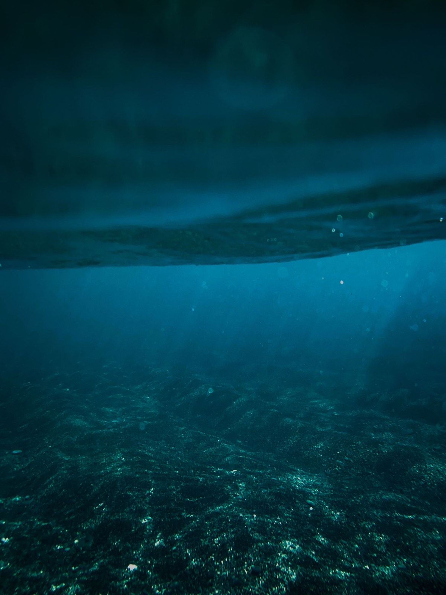
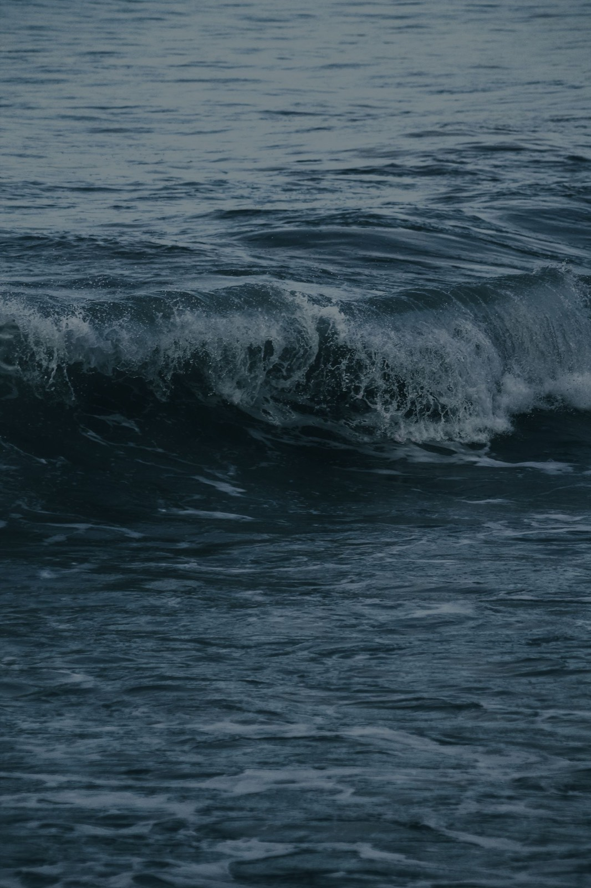

From a dropひと雫から、
幸せの波紋を。
自然界にもともとある周波数で、水の振動を整える。鹿児島・垂水にはじまった財団の活動は、いま全国41のサロンに広がっています。

Tarumizu, Kagoshima ── イメージ写真
自然界にもともとある周波数で、水の振動を整える。鹿児島・垂水にはじまった財団の活動は、いま全国41のサロンに広がっています。
財団の考え方
この世界の全ては振動していて、その主たるものは「水」です。人の身体は約70%が水でできています。
ディメンションの複合周波数は、自然界にある水の振動波をそのまま忠実に再現したものです。デバイスは、サロンでの体験を通してご案内しています。
本部は家庭用デバイスの製造元です。体験のご案内と販売は、販売店契約を結んだ全国の「ディメンションサロン」が担っています。
はじめての方へ
全国41か所。地域を選ぶと連絡先が出ます。
音と光に包まれる時間を、ゆったりと。
気に入ったら、ご家庭用デバイスを。
サロンでいただいた声から

どんどん沈んでいき、行き着くところまでいくと、今度はどんどん開いていく。最後には何もなくなって、すっきりしました福岡県 女性

一瞬、身体の中で川のような流れを感じました。終わったら頭がふわふわで、心地よい気だるさ東京都 女性
ご予約・お問い合わせは各サロンへ直接
全国41サロン（ハワイを含む）。お近くにない方は、サロン開業のご相談も承っています。
オハナシ会・体験会